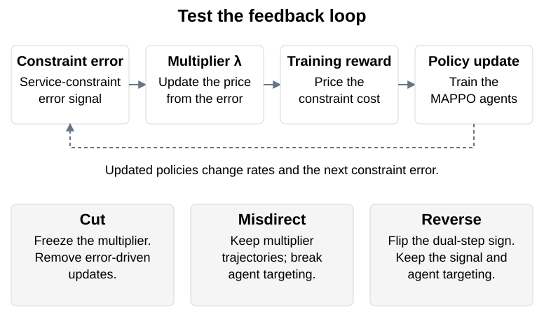
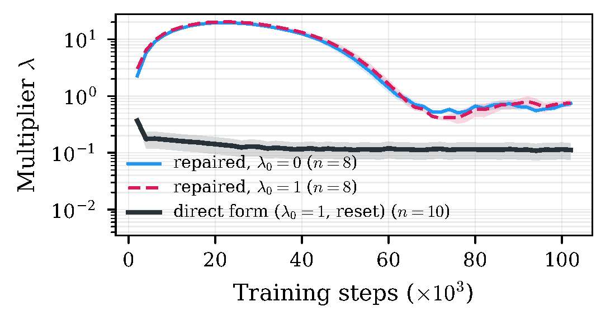
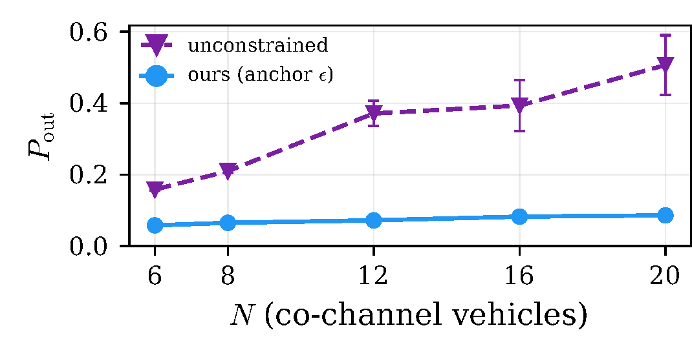
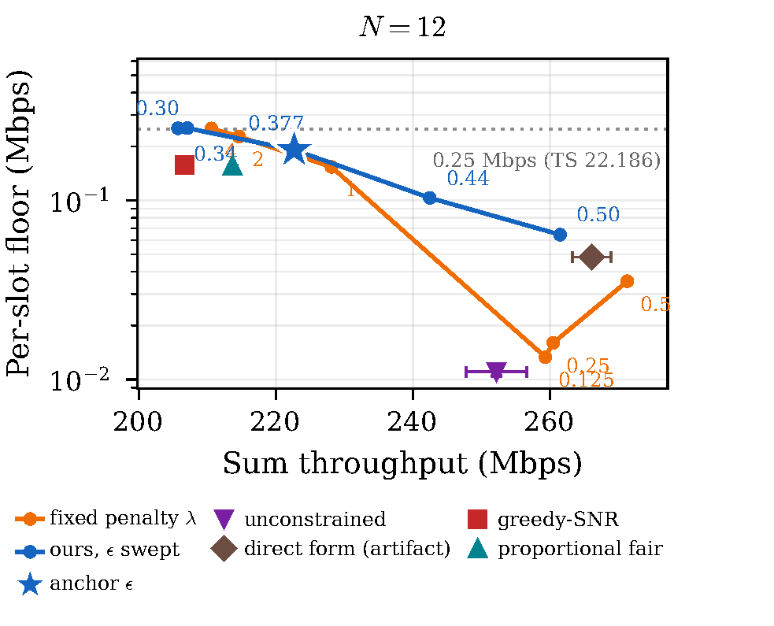

Causally Verified QoS-Floor Constraints for Decentralized SAGIN Access Association
1Waseda University 2Norwegian University of Science and Technology

Abstract
Decentralized access association in a space–air–ground network must protect the worst-served vehicle in each time slot. We test whether learned Lagrangian multipliers carry constraint feedback by cutting, misdirecting, and reversing the feedback signal, and by varying initialization. In this study, an apparent gain from a fleet-relative constraint came from episode-level multiplier resets. We then evaluate a one-sided expected-shortfall budget that responds to the service target. Simulations cover 6–20 vehicles. At 12 vehicles, the selected budget improves minimum per-slot service and reduces outage, with lower total throughput than unconstrained MAPPO.
Method
I modeled access association as a constrained multi-agent decision problem, built the EPyMARL simulation, and implemented MAPPO baselines. I used controlled interventions and initialization ablations to diagnose multiplier feedback, then evaluated the service-throughput trade-off of a shortfall budget.




Results




| Method | Sum throughput (Mbps) | Per-slot minimum (Mbps) | Outage (%) |
|---|---|---|---|
| Shortfall budget (proposed) | 222.7 | 0.1917 | 7.2 |
| Unconstrained MAPPO | 252.2 | 0.0110 | 37.1 |
| Fixed penalty, λ = 1 | 228.1 | 0.1541 | 8.5 |
| Greedy-SNR | 206.7 | 0.1579 | 9.1 |
| Proportional fair | 213.6 | 0.1562 | 8.3 |
Selected rows from Table I of the author manuscript, using held-out evaluation seeds; outage threshold: 0.1 Mbps. Rows are independently aggregated seed means. Better worst-user service comes with lower total throughput than unconstrained MAPPO. The method does not outperform a well-tuned fixed penalty at equal throughput.